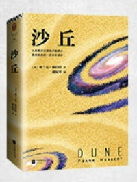
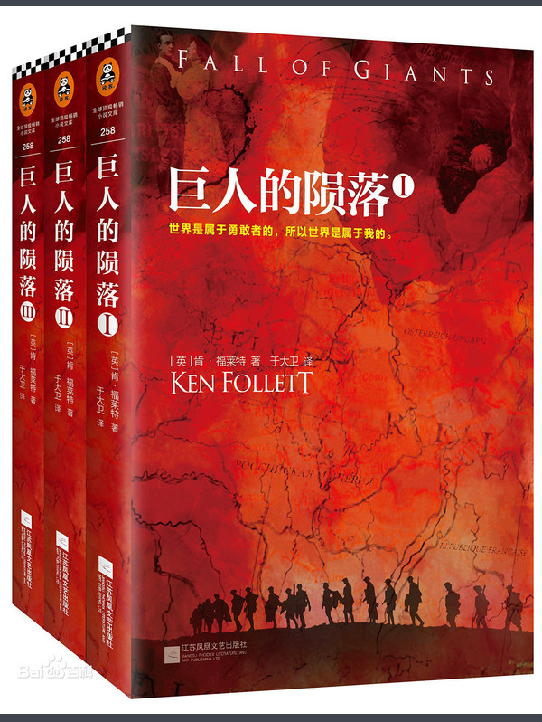
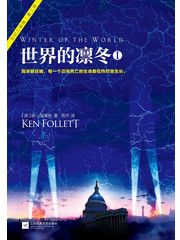
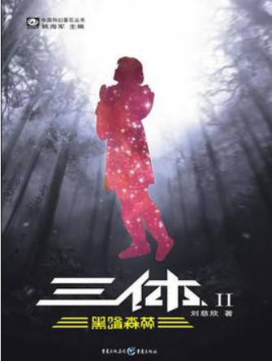
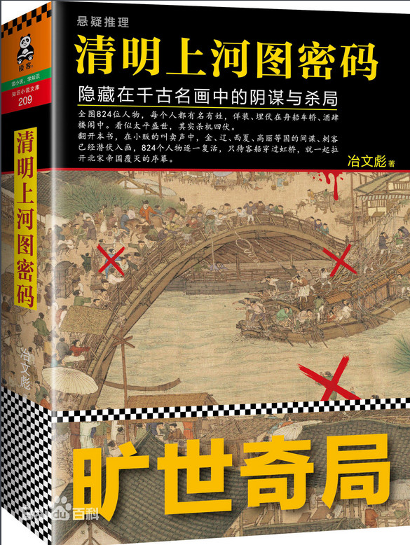
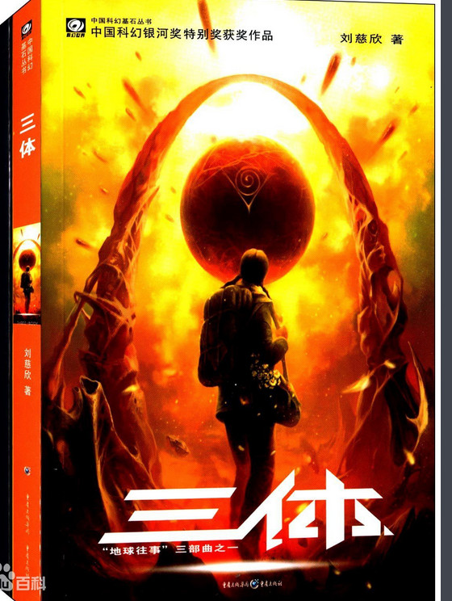
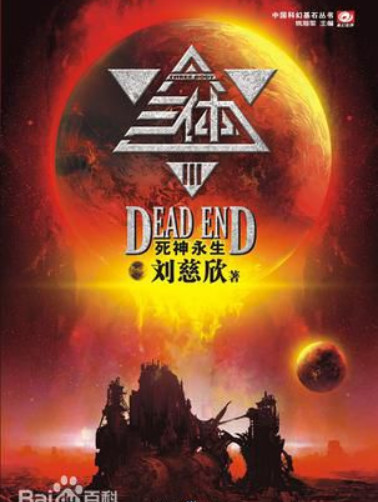
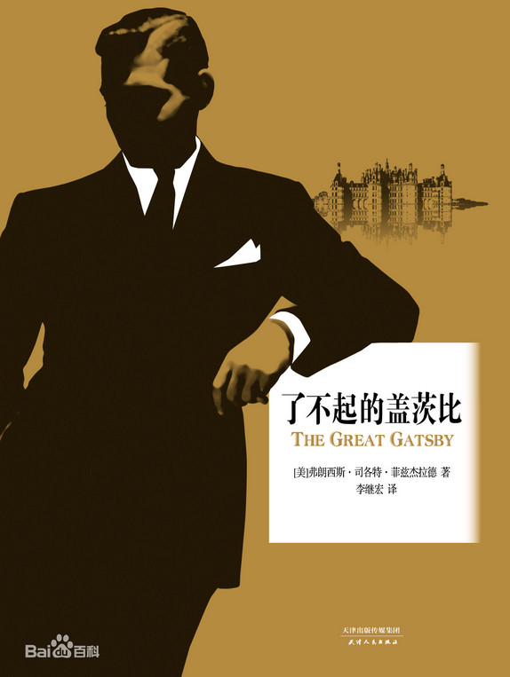
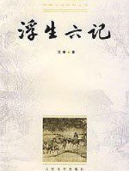
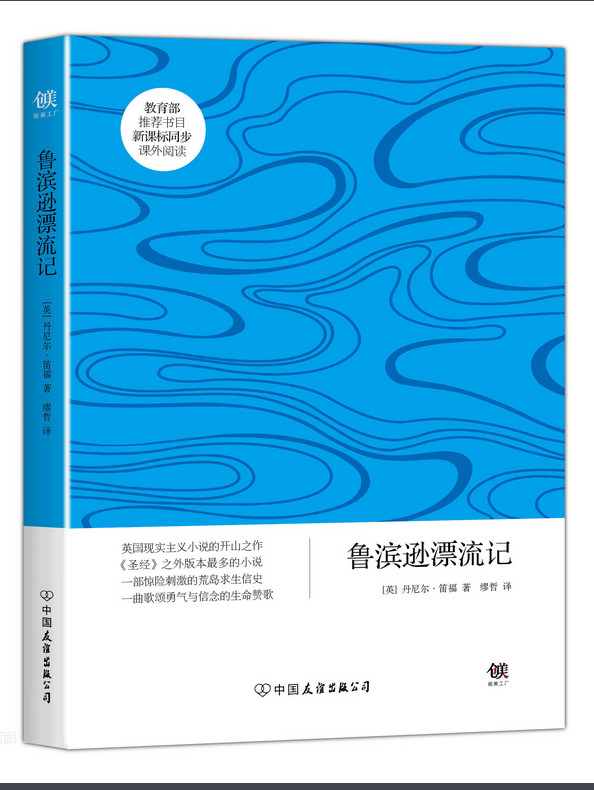

书名:《沙丘》
作者:[美]弗兰克·赫伯特
简介:《沙丘》是科幻小说史上的必读经典,入选了美国亚马逊“一生必读的100本书”、BBC“英国最受欢迎的100本书”
，更是首部同时获得雨果奖与星云奖的作品

书名:《巨人的陨落》
作者:[英] 肯·福莱特
简介:在第一次世界大战的硝烟中，每一个迈向死亡的生命都在热烈地生长……从充满灰尘和危险的煤矿到闪闪发光的皇室宫殿，波澜壮阔地展现了一个我们自认为了解，但从未如此真切感受过的20世纪。

书名:世界的凛冬》
作者:[英] 肯·福莱特
简介:"我亲眼目睹，每一个迈向死亡的生命都在热烈地生长。",
一切都始于那个裂变中的大时代——希特勒上台，爱德华八世退位，原子弹在广岛和长崎爆炸……世界剧烈改变，我该怎么办？

书名:《黑暗森林》
作者:[中]刘慈欣
简介:宇宙就是一座黑暗森林，每个文明都是带枪的猎人，像幽灵般潜行于林间，连呼吸都必须小心翼翼：他必须小心，因为林中到处都有与他一样潜行的猎人，如果他发现了别的生命，能做的只有一件事：开枪消灭之。
书名:《权力的游戏》
作者:[美]乔治·雷蒙德·理查德·马丁
简介:故事从维斯特洛大陆边境处发现远古传说中早已灭绝的生物开始，预示着危险即将到来。而这片大陆的临冬城主暨北境统领艾德·史塔克的家族也迎来了老友兼国王劳勃·拜拉席恩的来访。
书名:《独居的一年》
作者:[美]约翰欧文
简介:个故事里的每位成员都有些“反常”，他们一直在现有生活之外寻求另一种可能：少年埃迪迷失在忘年恋的激情中，从此无法爱上比自己年轻的女性；当你找到爱的时候，也就找到了自己。
300人很喜欢这本书
书名:《边城》
作者:[中]沈从文
简介:由四川过湖南去,靠东有一条官路。
这官路将近湘西边境到了一个地方名为“茶峒”的小山城时，有一小溪，溪边有座白色小塔，塔下住了一户单独的人家。这人家只一个老人，一个女孩子，一只黄狗。
300人很喜欢这本书
书名:《围城》
作者:[中]钱钟书
简介:抗战初期，外国留学生方鸿渐(陈道明 饰)回到了祖国。方鸿渐其实是在国外混了几年，一个学位没取得，最后没法才买了个学位归国的.
300人很喜欢这本书

书名:《清明上河图密码》
作者:[中]冶文彪
简介:画面正中央，舟楫相连的汴河上，一艘看似普通的客船正要穿过虹桥，而由于来不及降下桅杆，船似乎就要撞上虹桥，船上手忙脚乱，岸边大呼小叫，一片混乱之中，贼影闪过，一阵烟雾袭来，待到烟雾散去，客船上竟出现了二十四具尸体，所有人都目瞪口呆……
300人很喜欢这本书

书名:《解忧杂货铺》
作者:[日]东野圭吾
简介:该书讲述了在僻静街道旁的一家杂货店，只要写下烦恼投进店前门卷帘门的投信口，第二天就会在店后的牛奶箱里得到回答：因男友身患绝症，年轻女孩月兔在爱情与梦想间徘徊；

书名:《三体》
作者:[中]刘慈欣
简介:作品讲述了地球人类文明和三体文明的信息交流、生死搏杀及两个文明在宇宙中的兴衰历程。其第一部经过刘宇昆翻译后获得了第73届雨果奖最佳长篇小说奖

书名:《死神永生》
作者:[中]刘慈欣
简介:该书主要讲述了文革期间一次偶然的星际通讯引发的三体世界对地球的入侵以及之后人类文明与三体文明三百多年的恩怨情仇。

书名:《了不起的盖茨比》
作者:[美]菲茨杰拉德
简介:主人公詹姆斯·卡兹本是北达科他州的一个贫穷的农家子弟，自幼梦想做个出人头地的大人物。经过一番努力，他终于步步高升，并更名为杰伊·盖茨比。他在一个军训营里任中尉时，爱上了南方的大家闺秀黛茜·费。

书名:《浮生六记》
作者:[中]沈复
简介:浮生六记》是清朝长洲人沈复（字三白，号梅逸）著于嘉庆十三年（1808年）的自传体散文。清朝王韬的妻兄杨引传在苏州的冷摊上发现《浮生六记》的残稿，只有四卷，交给当时在上海主持申报闻尊阁的王韬，以活字板刊行于1877年。
书名:《红楼梦》
作者:[中]曹雪芹
简介:红楼梦》开篇以神话形式介绍作品的由来，说女娲补天之石剩一块未用，弃在大荒山无稽崖青埂峰下。茫茫大士、渺渺真人经过此地，施法使其有了灵性，携带下凡

书名:《鲁滨逊漂流记》
作者:[英]丹尼尔·笛福
简介:该作主要讲述了主人公鲁滨逊·克鲁索出生于一个中产阶级家庭，一生志在遨游四海。一次在去非洲航海的途中遇到风暴，只身漂流到一个无人的荒岛上，开始了段与世隔绝的生活。